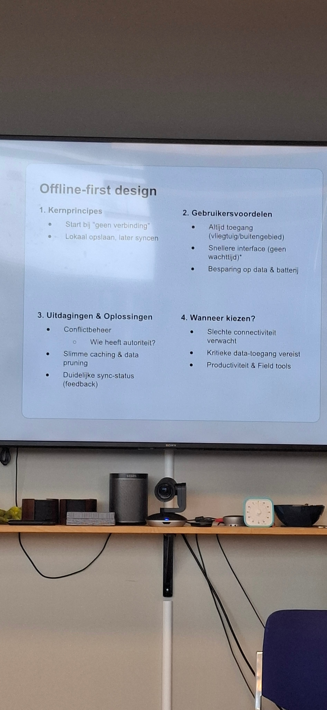
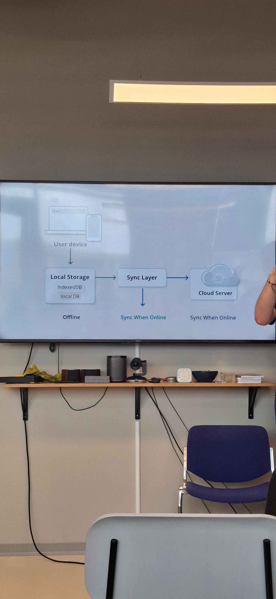
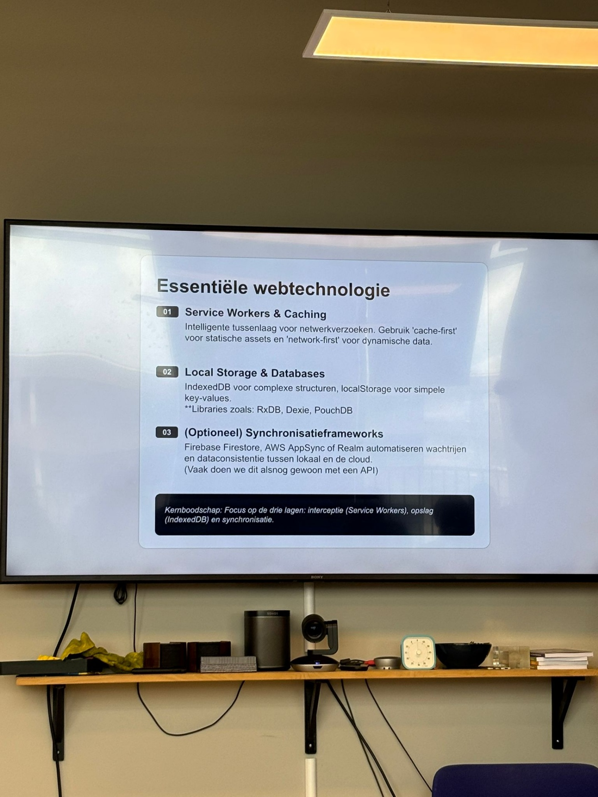
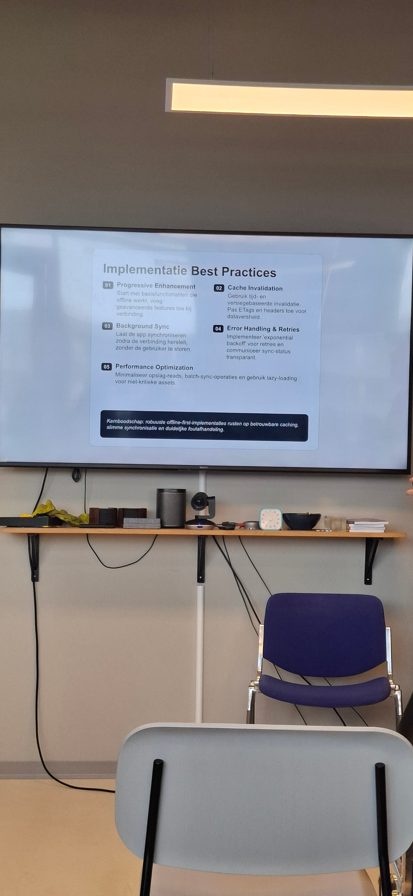

De rol van Voorhoede
Voorhoede zijn van zichzelf geen designers, maar je kunt nog steeds input geven over dingen die gaaf kunnen zijn. Het draait erom dat je je aanpast aan de klant.
Content & CMS
- Headless CMS — een CMS dat alleen de content beheert, los van de front-end.
- Data CMS — content als gestructureerde data die je via een API ophaalt.
Techniek & effecten
Met mix-blend-mode in CSS kun je met weinig moeite mooie effecten maken.
Het <ruby>-element is een HTML-element dat oorspronkelijk uit het Japans komt, om uitspraak of annotatie boven tekst te tonen.
Design systems & toegankelijkheid
Het NL Design System is een gedeelde basis met componenten en richtlijnen voor (overheids)websites. Belangrijke vraag daarbij: wat is digitale toegankelijkheid eigenlijk, en hoe zorg je dat iedereen je site kan gebruiken?
Met Token Studio in Figma beheer je design tokens (kleuren, spacing, typografie) direct in je design en koppel je ze aan de code.
Offline-first design
Een PWA (Progressive Web App) en een offline-first aanpak zorgen ervoor dat je app blijft werken zonder verbinding. Je start bij "geen verbinding", slaat lokaal op en synct later wanneer er weer internet is.

Voordelen voor de gebruiker
- Altijd toegang, ook in het vliegtuig of buitengebied.
- Snellere interface zonder wachttijd.
- Besparing op data en batterij.
Uitdagingen
- Conflictbeheer — wie heeft de autoriteit als data botst?
- Slimme caching & data pruning.
- Duidelijke sync-status als feedback naar de gebruiker.
Je kiest hiervoor bij slechte connectiviteit, wanneer kritieke data-toegang vereist is, of voor productiviteits- en field tools.

Essentiële webtechnologie

- Service Workers & Caching — een tussenlaag voor netwerkverzoeken. Gebruik "cache-first" voor statische assets en "network-first" voor dynamische data.
- Local Storage & Databases — IndexedDB voor complexe structuren, localStorage voor simpele key-values. Libraries zoals RxDB, Dexie en PouchDB helpen daarbij.
- Synchronisatieframeworks (optioneel) — Firebase Firestore, AWS AppSync of Realm automatiseren het wachtrijen en de dataconsistentie tussen lokaal en de cloud. (Vaak doen we dit alsnog gewoon met een API.)
Implementatie best practices

- Progressive Enhancement — start met basisfunctionaliteit die offline werkt, voeg geavanceerde features toe bij verbinding.
- Background Sync — laat de app synchroniseren zodra de verbinding herstelt, zonder de gebruiker te storen.
- Cache Invalidation — gebruik tijd- en versiegebaseerde invalidatie; pas ETags en headers toe voor dataversheid.
- Error Handling & Retries — implementeer "exponential backoff" voor retries en communiceer de sync-status transparant.
- Performance Optimization — minimaliseer opslag-reads, batch sync-operaties en gebruik lazy-loading voor niet-kritieke assets.